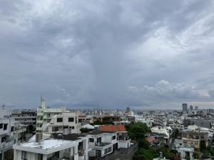
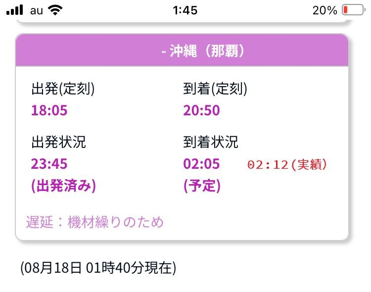
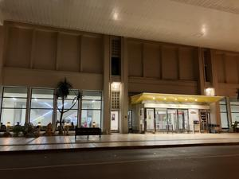

うるがいの話 ある日
最新: ５時間２２分遅れ【うるがいの話 ある日】とは 一日だけのプログです
『うるがいの話』の最新一日だけのプログで、通信料が少なく経済的だ。カニの画像をクリックすると全ての日付が載る『うるがいの話』サイトを表示します
|
|
【うるがいの話】 うるがい(ｳﾙｶﾞｲ urugai)とは、『もずくがに』の名前でとても大きくなります。 |
|---|---|
|
|
【カミマヤーの話】 猫のことを方言でマヤーといいます。カミマヤー（kamimayaa）とは、神の猫のことです。 |
|
【たながぁの音楽】 たながぁ（ﾀﾅｶﾞｰ tanagaa）とは手長えびのことで、何種類かあり大きいのは車 エビぐらいになります。 |

|
【ぶながぁの話】 ぶながぁ(ﾌﾞﾅｶﾞｰ bunagaa)とは、赤い髪の毛、赤い身体、そして身長は１ｍ２０ｃｍ ぐらい、川の蟹を食べているの目撃された。場所は沖縄県国頭郡大宜味村のと ある村僕の隣近所に住んでいる爺さんから、聞いた話です。 |
|
|
【ギーマの話】 ギーマ(giima)とは、山原の里山に咲くスズランに似た、 花を付けます。実は食べられます、 気が付くと口の周りが紫になっています。 |
2024年08月18日 (日）５時間２２分遅れ
16:22

『お腹が空いているから、マックによってくれる』と、アパートに向かう途
中で言われる。子供を迎え空港を出発したのは朝の３時だった。５時間以上
も出発が遅れたのでお腹が空いたらしい。私が、家に戻ったのは朝の４時！
いつもは、起きる時間である。いったん寝るも６時過ぎ、朝日で起きる。そ
して雨戸を開けたり、朝の作務を１時間ほど、そしてまた眠る。お中元のオ
ードブルを取りに行かないといけないヨと、９時半に起こされる。おお、そ
うかと起きる。

雨が降る予定だったので昨日の夜（２２時頃、エイサーの音がした）、洗濯
物を干した。雨は、ほとんど降らず日差しがときどきさす。ウークイまで降
る様子はない。飛行機は機材遅れが理由らしい、台風７号の影響があったか
も。子供が、今回は満席だったと言っていた。
ところで、２時過ぎに駐車場へ行くと入り口は閉まっていた（レンタカーの
駐車所に止める）。営業時間は延長去れなかった！。
駐車場の営業時間
６：００から２４：００（１８時間）
※航空機の到着が遅れた場合は、営業時間を延長します。

飛行機が到着したと子供から連絡を受けて、車にのるまで４０分以上もかか
る。タクシーもほとんど無く、呼び出して頼んでいるのも数台だった。子供
の話によると、空港にそのままいる人がいる。モノレールの始発６時だから
か。
１６時１４分 ビットコインの総資産 ￥２５、５３４（↑２２３）